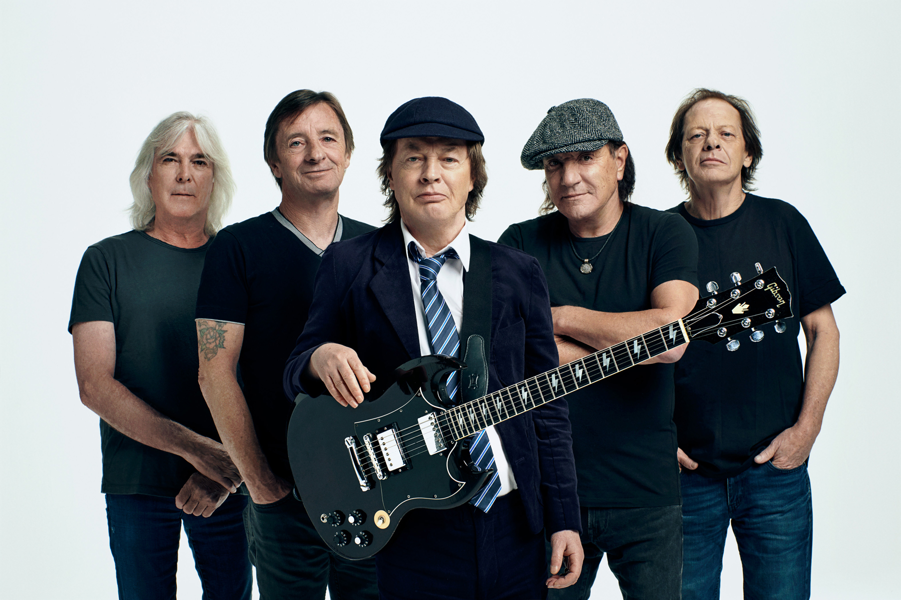

Hello world
Arctic Monkeys — ინგლისური ინდი როკ-ჯგუფი შეფილდიდან. ჩამოყალიბდა 2002 წელს ვოკალისტ ალექს ტერნერის, გიტარისტ ჯეიმი კუკისა და ბას გიტარისტ ენდი ნიკოლსონის მიერ. ამჟამად ჯგუფში შედიან ტერნერი (წამყვანი ვოკალი/რიტმული გიტარა), კუკი (წამყვანი ვოკალი, რიტმული გიტარა), ო'მეილი (ბას–გიტარა/ბეკ-ვოკალი), ჰელდერზი (დასარტყმელი საკრავები/ბეკ-ვოკალი).ბასისტმა ენდი ნიკოლსონმა ჯგუფი დატოვა მალევე, მას შემდეგ, რაც მათ 2006 წელს გამოუშვეს სადებიუტო ალბომი. მათ გამოშვებული აქვთ ექვსი სტუდიური ალბომი: Whatever People Say I Am, That's What I'm Not (2006), Favourite Worst Nightmare (2007), Humbug (2009), Suck It and See (2011), AM (2013) და Tranquility Base Hotel & Casino (2018). ასევე გამოშვეული აქვთ 1 ლაივ ალბომი - At the Apollo (2008). მათი სადებიუტო ალბომი ყველაზე სწრაფად გაყიდვადი სადებიუტო ალბომია ბრიტანეთის ჩარტების ისტორიაში. 2013 წელს კი Rolling Stone -მა დაასახელა ოცდამეათე საუკეთესო სადებიუტო ალბომად. ჯგუფს მოგებული აქვს შვიდი Brit Awards - სამჯერ მოიგეს საუკეთესო ბრიტანული ჯგუფის და საუკეთესო ბრიტანული ალბომების ჯილდოები, ნომინირებული იყო ხუთ Grammy Awards -ზე. Მათ ასევე მოიგეს Mercury Prize 2006 წელს მათი პირველი ალბომისთვის. Გარდა ამისა, ნომინირებულნი იყვნენ 2007, 2013 და 2018 წლებში. 2007 და 2013 წლებში Ჯგუფი გახლდათ მთავარი შემსრულებელი გლასტონბურის ფესტივალზე. Arctic Monkeys გამოცხადებული იქნა, როგორც ერთ-ერთი პირველი ჯგუფი, რომელმაც ხალხის ყურადღება ინტერნეტის მეშვეობით მიიპყრო.

AC/DC (ინგლ. შემოკლება alternating current/direct current — ცვლადი დენი/მუდმივი დენი) — ავსტრალიური როკ-ჯგუფი, ჩამოყალიბებული 1973 წელს ძმების, მალკოლმ და ანგუს იანგების მიერ, რომლებიც რჩებოდნენ ჯგუფის მუდმივ წევრებად 2014 წელს მალკოლმის წასვლამდე. ჯგუფს, როგორც წესი, მძიმე ან ბლუზ-როკ კოლექტივს უწოდებენ, მაგრამ ისინი აგრეთვე ითვლებიან მძიმე მეტალის პიონერებად და ხოლმე მითითებულები არიან ამ ჟანრის წამრომადგენლებშიც. თუმცა, თავად ისინი საკუთარ მუსიკას ყოველთვის როკ-ენ-როლს უწოდებდნენ. დღეისთვის AC/DC მსოფლიოს ერთ-ერთი ყველაზე შემოსავლიანი როკ-ჯგუფია. პირველი ალბომის High Voltage, 1975 წლის 17 თებერვალს გამოცემამდე ჯგუფის შემადგენლობა რამდენიმეჯერ შეიცვალა. წევრობა სტაბილური იყო, თუმცა 1977 წელს, ალბომის Powerage ჩაწერისას მარკ ევანსს ჩაენაცვლა კლიფ უილიამსი. ალბომ Highway to Hell-ის ჩაწერიდან რამდენიმე თვეში, 1980 წლის 19 თებერვალს, ალკოჰოლის გადაჭარბებული მოხმარების გამო დაიღუპა წამყვანი ვოკალისტი და სიმღერების თანაავტორი ბონ სკოტი. ჯგუფი დაშლას აპირებდა, მაგრამ სკოტის მშობლების მხარდაჭერით, განაგრძო არსებობდა და ეძებდა ახალ ვოკალისტს. ჯგუფ Geordie-ს ყოფილი ვოკალისტი ბრაიან ჯონსი AC/DC-ის შეუერთდა. იმავე წლის ბოლოს გამოვიდა ახალი სტუდიური ალბომი Back in Black, მიძღვნა სკოტისადმი. მან ჯგუფი წარმატების ახალ მწვერვალზე აიყვანა და იქცა მის ყველაზე დროის ბესტსელერად, გაიყიდა რა გამოცემის პირველი კვირის ერთ დღეს 10.000 ასლის სახით. ჯგუფის შემდეგი ალბომი, For Those About to Rock We Salute You იყო პირველი, რომელიც აშშ-ში პირველ პოზიციაზე მოხვდა. კოლექტივის პოპულარობამ იკლო, როდესაც დრამერი ფილ რადი 1983 წელს ჯგუფიდან წავიდა. მას ჩაენაცვლა დიოს საიმონ რაიტი. ჯგუფი 1990-იანებში გამოცოცხლდა ალბომით The Razors Edge. 1994 წელს ფილ რადი დაბრუნდა ჯგუფში და ჩაენაცვლა კრის სლეიდს, რომელიც უკრავდა 1989-1994 წლებში. იგი მონაწილეობდა 1995 წლის Ballbreaker-ის ჩაწერაში. ამის შემდეგ ჯგუფის შემადგენლობა არ შეცვლილა. 2000 წელს გამოვიდა Stiff Upper Lip, რომელიც კრიტიკოსებმა დადებითად შეაფასეს, შემდეგ კი - ჯგუფის დღეისთვის უკანასკნელი სტუდიური ალბომი Black Ice, 2008 წლის მეორე ყველაზე გაყიდვადი ალბომი. ალბომის For Those About to Rock შემდეგ ეს იყო AC/DC-ის ყველაზე დიდი წარმატება ჩარტში და საბოლოოდ მოხვდა მსოფლიოს ყველა წამყვანი ჩარტის პირველ პოზიციებზე. AC/DC-ის მსოფლიო მასშტაბით გაყიდული აქვს 200 მილიონზე მეტი ალბომი, მათ შორის 71.5 მილიონი - მხოლოდ აშშ-ში. ამით იგი აშშ-ში რიგით მე-10 ყველაზე და მსოფლიოს ყველა დროის ერთ-ერთი გაყიდვადი ჯგუფია. Back in Black მსოფლიო მასშტაბით დაახლოებით 50 მილიონი ასლის სახით გაიყიდა, იქცა რა შემსრულებლის მიერ ყველა დროის მეხუთე და რომელიმე ჯგუფის მიერ მესამე ყველაზე გაყიდვად ალბომად. იგი მხოლო აშშ-ში 22 მილიონი ასლის სახით გაიყიდა და იქცა ამ ქვეყანაში ყველა დროის რიგით მეექვსე ყველაზე გაყიდვად ალბომად. AC/DC მოხვდა მეოთხე პოზიციაზე VH1-ის „მძიმე როკის ყველა დროის 100 უდიდესი შემსრულებლის“ სიაში და MTV-ის მიერ დასახელებული იქნა „ყველა დროის უდიდეს მძიმე მეტალ ჯგუფად.“ 2004 წელს იგი Rolling Stone-ის „ყველა დროის 100 უდიდესი შემსრულებლის სიაში“ 72-ე პოზიციას იკავებდა. პროდიუსერმა რიკ რუბინმა, რომელმაც ჟურნალის ამ სიისთვის ჯგუფის შესახებ ესე დაწერა, AC/DC-ის უწოდა „ყველა დროის უდიდესი როკ-ენ-როლ ჯგუფი.“ 2010 წელს AC/DC VH1-ის „ყველა დროის 100 უდიდესი შემსრულებლის“ სიაში 23-ე ადგილს იკავებდა.
ჯგუფის შექმნა ძმებმა, მალკოლმ და ანგუს იანგებმა გადაწყვიტეს. ანგუსი 5 წლიდან დაინტერესებულია გიტარაზე დაკვრით. ანგუსის უფროსმა ძმამ ცუდად იცოდა გიტარაზე დაკვრა და რაც იცოდა, ანგუსს გაუზიარა. ამის შემდეგ ანგუსმა გიტარის სწავლა დამოუკიდებლად განაგრძო - ის ფაქტობრივად, თვითნასწავლი გიტარისტია. მის ოჯახს არ ჰქონდა საშუალება შვილი გიტარის შემსწავლელ კურსებზე ეტარებინა, რადგან ოჯახში ცხრა და–ძმა იყო. ოჯახს თავის გატანაც კი უჭირდა, ანგუსისთვის ახალი გიტარის ყიდვაზე ლაპარაკიც კი ზედმეტი იყო. ანგუსს პატარაობიდანვე მუსიკა იზიდავდა, ხოლო მალკოლმი სპორტით იყო დაინტერესებული და ანგუსს დასცინოდა კიდეც მისი მუსიკალური ინტერესების გამო. თუმცა მან საბოლოოდ სპორტს მუსიკა არჩია და ანგუსს გიტარაზე დაკვრის სწავლა სთხოვა. 15 წლის ანგუსი, მაშინ უკვე უკრავდა როკ კლუბებში, წარმატებულ ჯგუფებთან ერთად. ძმებმა პირველი ჯგუფი 1968 წელს შექმნეს. თუმცა ამ ჯგუფმა სახელიც და წევრებიც შეიცვალა, უცვლელი მხოლოდ ძმები იანგები დარჩნენ და 1973 წელს საბოლოოდ გამოვიდნენ AC/DC-ს სახელით. იანგების ერთ-ერთი და მკერავი იყო. ანგუსმა მის საკერავ მანქანაზე დაინახა წარწერა AC/DC. მისი მნიშვნელობა ინგლისურად არის alternating current/direct current — ცვლადი დენი/მუდმივი დენი.
